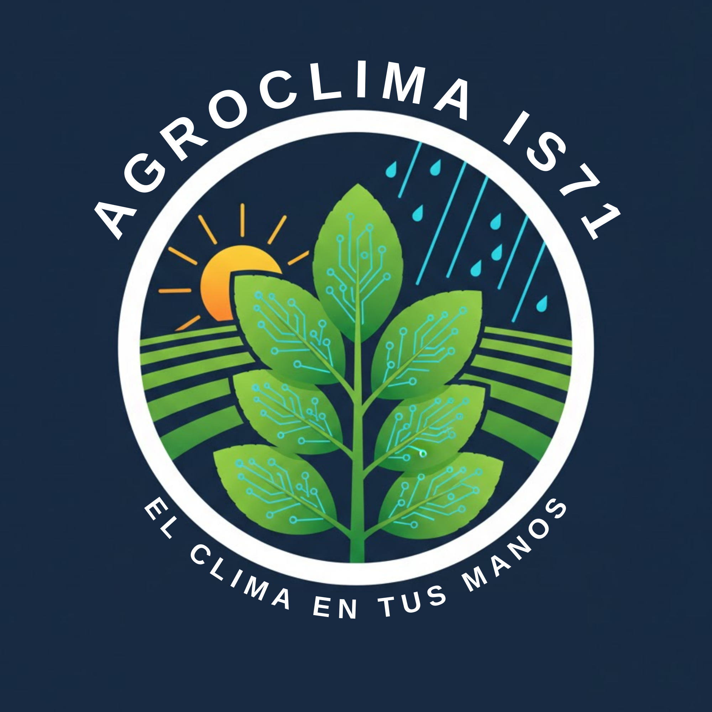

Estación
Cerrar
☰

AGROCLIMA IS 71
El clima en tus manos
Cargando fecha...
Opciones
🌙 Modo oscuro
🌱 Cultivos recomendados
🌡️ Temperatura
--
💧 Humedad
--
💨 Viento
--
🌧️ Precipitación
--
DATOS OBTENIDOS DESDE LA CENTRAL METEOROLÓGICA DE LA E.F.A COLONIA UNIÓN IS 71
Historial diario (últimos 30 días)
Descargar PNG
Climograma mensual (Año 2026)
Descargar PNG